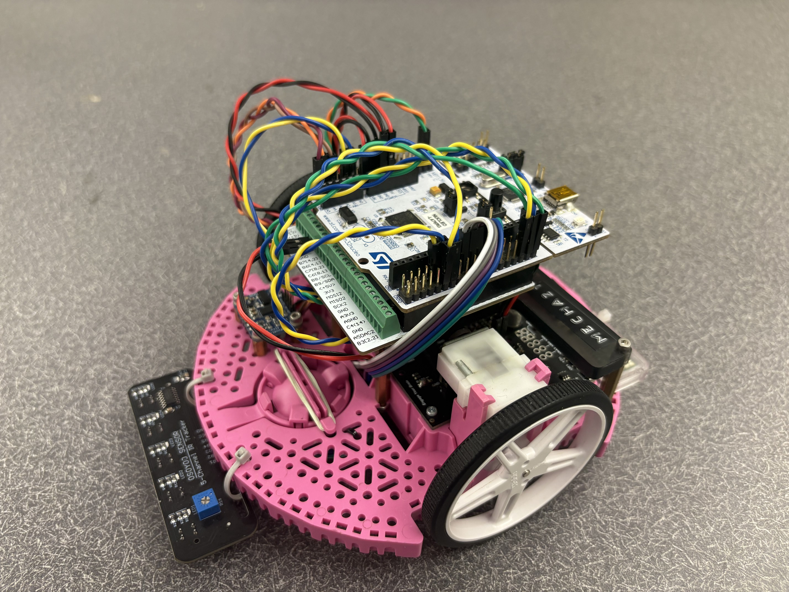

Project Overview
This project implements a line-following robot using a MicroPython-based control system on an STM32 microcontroller.
github repository: Here
Project Date
January - March 2026
{kind=link}

How our robot works:
Romi utilizes a PID controller with a digital IR sensor array to follow a line and then uses state estimation to avoid obstacles and navigate a maze without using lines.
Hardware
The robot consists of the following components:
2x DC motors with encoders
IMU sensor (BNO055)
IR sensor array for line detection
STM32 Nucleo board
Challenges
One of the biggest challenges we faced was the state estimation working differently for different battery voltages. We often had to adjust the set points to account for fully charged versus used batteries. In hindshight we should have created a voltage dependent way to adjust the motor inputs to account for the different battery voltages.
Another challenge we faced was smooth line following using the IR sensor array. Although the digitial sensor array was easy to implement, it was not as smooth as we would have liked due to there only being 5 sensors and the sensors being quite far apart from each other. This resulted in the robot jerking around the line and not following it as smoothly as we would have liked.
Quirks
As mentioned above, something we did different from most other teams was using a digital IR sensor array rather than a traditional analog IR sensor array. At the time of purchasing the components, we did not believe the digital versus analog difference would be a significant factor in the performance of the robot. When initially working with the robot, it was very easy to implement with sensitivity being adjusted using a physical potentiometer and we didn’t need a driver to use it to it’s full potential. However, the distance between the sensors was quite large, and the robot would drive off centered for a decent amount of distance before the sensors would see the line again and correct itself.
Another quirk of our project is we did not use any sort of bump sensor to detect the wall. Instead we relied on the IMU acceleration data to determine when the robot had hit the wall. This was a challenge at times because the robot speeding up would cause the acceleration interrupt to trigger before the robot had actually hit the wall, causing the robot to start the next segment of the track before it had actually hit the wall. Generally this was not a major issue, but it was something we should have accounted for in the design phase.